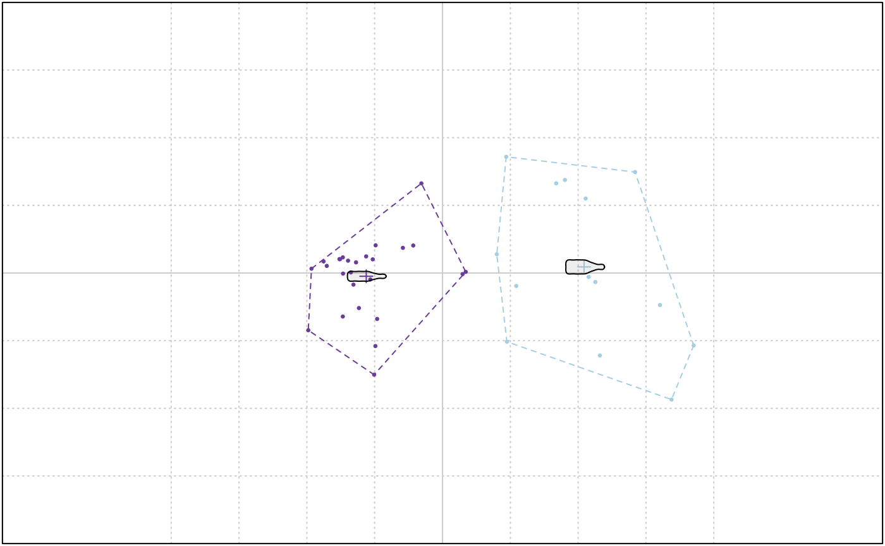

A very basic implementation of k-means. Beware that morphospaces are calculated so far for the 1st and 2nd component.
KMEANS(x, ...) # S3 method for PCA KMEANS(x, centers, nax = 1:2, pch = 20, cex = 0.5, ...)
| x | PCA object |
|---|---|
| ... | additional arguments to be passed to kmeans |
| centers | numeric number of centers |
| nax | numeric the range of PC components to use (1:2 by default) |
| pch | to draw the points |
| cex | to draw the points |
the same thing as kmeans
Other multivariate:
CLUST(),
KMEDOIDS(),
LDA(),
MANOVA_PW(),
MANOVA(),
MDS(),
MSHAPES(),
NMDS(),
PCA(),
classification_metrics()
data(bot) bp <- PCA(efourier(bot, 10)) #> 'norm=TRUE' is used and this may be troublesome. See ?efourier KMEANS(bp, 2)  #> K-means clustering with 2 clusters of sizes 14, 26 #> #> Cluster means: #> PC1 PC2 #> 1 0.07496282 0.003229186 #> 2 -0.04036460 -0.001738792 #> #> Clustering vector: #> brahma caney chimay corona deusventrue #> 2 2 1 2 2 #> duvel franziskaner grimbergen guiness hoegardeen #> 1 2 1 2 2 #> jupiler kingfisher latrappe lindemanskriek nicechouffe #> 2 2 1 2 2 #> pecheresse sierranevada tanglefoot tauro westmalle #> 2 1 1 2 2 #> amrut ballantines bushmills chivas dalmore #> 2 1 2 1 1 #> famousgrouse glendronach glenmorangie highlandpark jackdaniels #> 2 2 2 1 2 #> jb johnniewalker magallan makersmark oban #> 2 2 2 1 2 #> oldpotrero redbreast tamdhu wildturkey yoichi #> 1 1 2 2 1 #> #> Within cluster sum of squares by cluster: #> [1] 0.03758606 0.02127484 #> (between_SS / total_SS = 67.3 %) #> #> Available components: #> #> [1] "cluster" "centers" "totss" "withinss" "tot.withinss" #> [6] "betweenss" "size" "iter" "ifault"